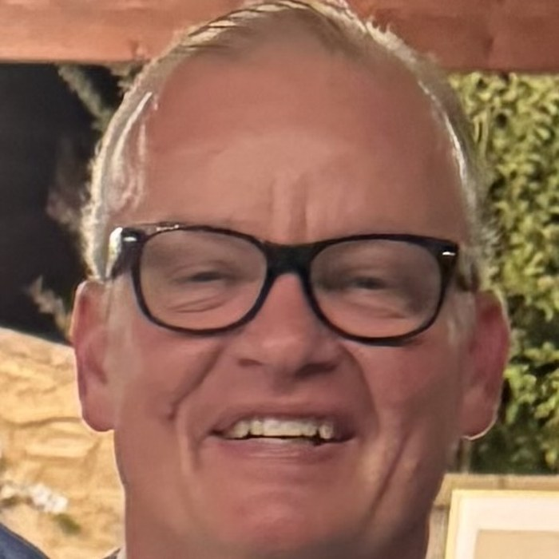
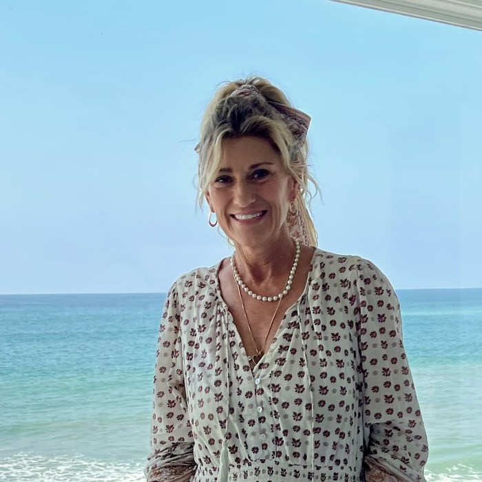
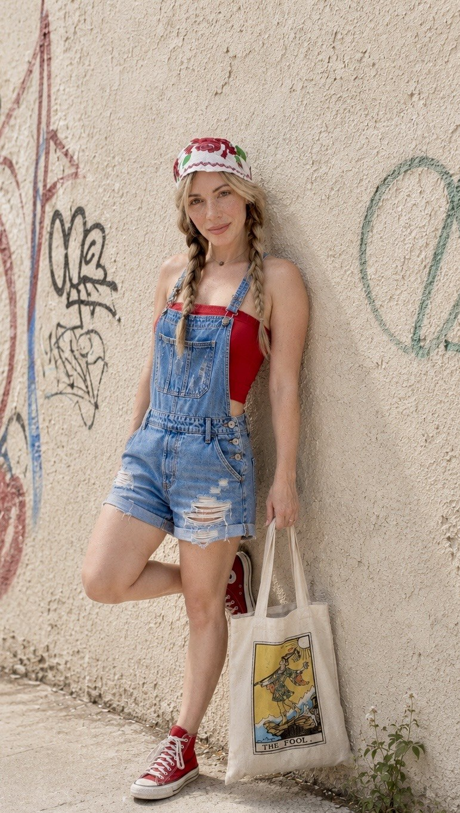
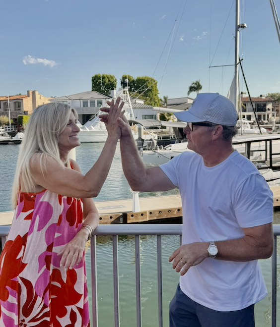
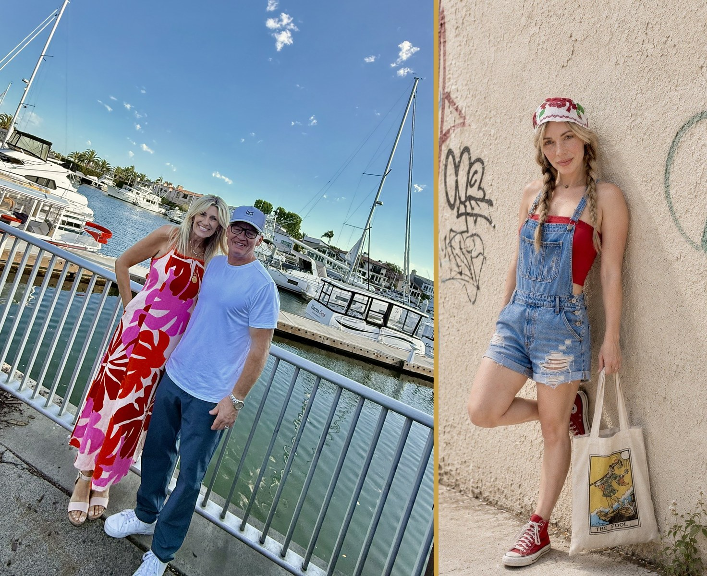

About the Magazine
Recovery is an art form — not a formula. The Art of Recovery is a media home for the recovery community: the stories and the songs, the paintings and the ink, the honest mess and the hard-won joy of it.

Mike O’Reilly has spent more than twenty years in addiction treatment — not as an outsider studying recovery from a safe distance, but as someone who survived the very systems he later helped rebuild.
After living through addiction, homelessness, incarceration, family separation, and the punitive machinery that often strips people of their humanity, Mike entered the field with a different vision: recovery should restore dignity, not erase it. Since 2004, he has served as a founder, owner, director, programmer, advocate, and facility builder — helping create and revive treatment environments where clients are seen as human beings rather than bodies in beds.
Mike is known for standing with those most often dismissed as too difficult, too damaged, or too far gone. His work has helped countless clients recover their voice, value, and sense of self — and many have gone on to serve others in the field. As Editor of The Art of Recovery, Mike seeks one thing: for his voice, the contributors’, and the readers’ to build a global community that welcomes as many voices as are willing and able to join him — a nuanced, creative conversation that surpasses the barriers of words, race, age, religion, and social status, as Art does. Welcome to the beginning…
Mike is the proud husband of Amy and Dad to Sydney, McKay, Porter, Matti, Ava, Harper, Charlie and Pressly.
“Don’t smoke crack.”

Grace Rogers is a visionary marketing executive, brand architect, and community connector with more than 35 years of experience building and scaling iconic brands across fashion, lifestyle, and behavioral health. As a founding executive of ROXY and creator of “b by Burton,” she helped shape globally recognized brands from inception, blending creative storytelling with strategic growth. Over the past decade, she has brought that same leadership into the substance abuse and mental health space, where she has played a pivotal role in building trusted referral networks, elevating treatment brands, and fostering meaningful, community-driven impact.
Known for her ability to seamlessly bridge marketing, sales, and relationships, Grace has led brand transformations, launched national campaigns, and created powerful experiential events that connect people in authentic ways. She is deeply embedded in the Southern California behavioral health community, serving on multiple nonprofit boards and leading a thriving networking group of over 900 members. Her work is grounded in purpose — helping organizations grow while making a real difference in people’s lives and strengthening the communities around them.
Beyond her professional accomplishments, Grace is a proud mother to her 16-year-old son and lives in Costa Mesa, California with her son and their two dogs. Born and raised in nearby Newport Beach, she is deeply rooted in the community she serves and cherishes her close-knit family and lifelong friendships. Grace approaches life with gratitude and humility, genuinely loving what she does and the people she shares it with, and feels incredibly grateful for the journey that continues to unfold.
“Always be the first to smile.”

“The art of life is to stay wide open and be vulnerable, to just be with it all.”
— Ram Dass


Dreams do come true.
This magazine began as a conversation between three people who believed the recovery community deserved something beautiful — and you’re holding the proof. Thank you for landing here. Truly.
But here’s the thing we most want you to know: this isn’t ours — it’s ours, together. Every reader, every story submitted, every page shared builds this community alongside us. You aren’t visiting something we made. You’re helping make it.
— Mike, Grace & Amy
“You are the artist of your own recovery — create a masterpiece.”
— Mike O’Reilly, Co-Founder